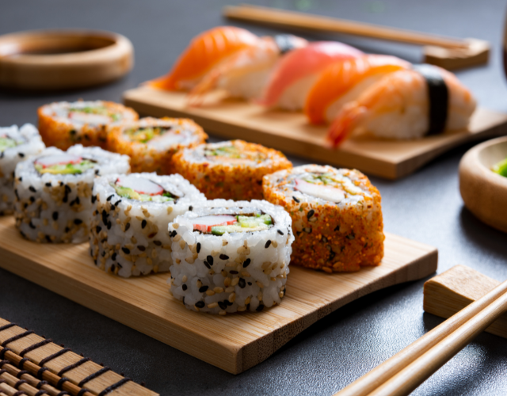
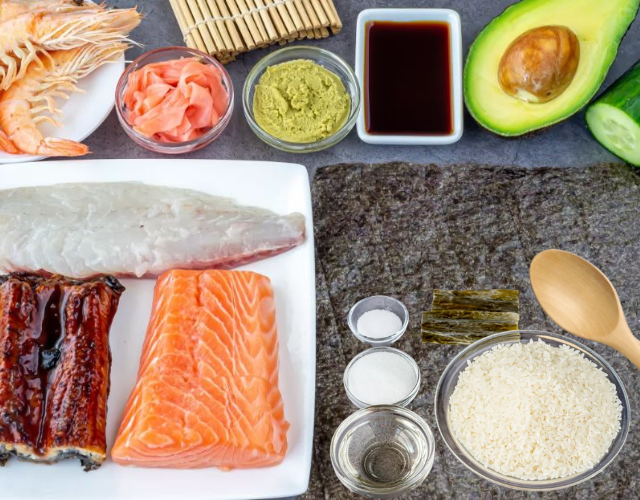

Receta
Sushi


Tiempo de Preparación:
15 minutos
Tiempo de Cocción:
10 minutos
Tiempo Total:
25 minutos
Ingredientes
- • Para el Arroz:
- • 400g de Arroz para Sushi
- • 1 trozo de Alga Kombu
- • 60ml de Vinagre de Arroz
- • 30g de Azúcar
- • Sal al gusto
- • Para el Relleno:
- • 4 Camarones limpios
- • 120g de lomo de Dorada
- • 80g de lomo de Salmón
- • 8gr de Unagi
- • 2 laminas de Alga Nori
- • 1 Aguacate
- • 1 Pepino
- • 1 Wasabi
- • 1 trozo de Jengibre
- • Salsa de Soja
- • Sal y/o Pimienta al gusto
Preparación
- Para el Arroz:
- 1. Limpiar el arroz, escurrir y dejar reposar por 1 hora.
- 2. Cocer el arroz con el trozo de alga kombu.
- 3. Cocinar tapado a fuego medio y a fuego alto por 7 minutos c/u, dejar reposar por 10 minutos.
- 4. Mezclar el vinagre de arroz, el azucar y la sal al gusto.
- 5. Añadir la mezcla al arroz y dejar enfriar.
- Para los Nigiri:
- 6. Formar croquetas de arroz.
- 7. Untar el wasabi y colocar el pez arriba.
- Para los Maki:
- 8. Lavar y cortar las verduras.
- 9. Colocar el alga nori en la esterilla, y extender una capa de arroz sobre la misma.
- 10. Untar el wasabi y colocar las verduras en el centro.
- 11. Enrrollar el maki.
- 12. Cortar el maki en 8 rodajas.
- 13. Servir el sushi con el wasabi, el jengibre y la salsa de soja.